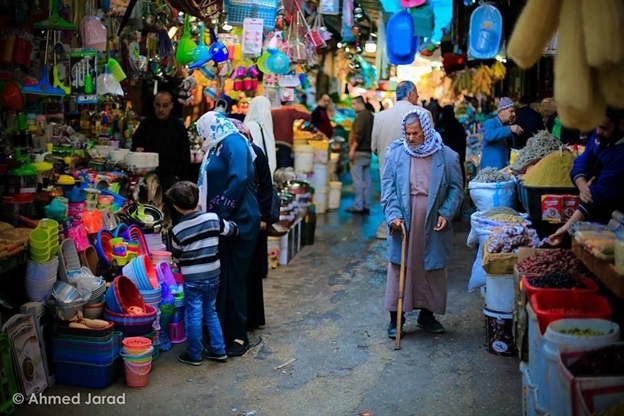
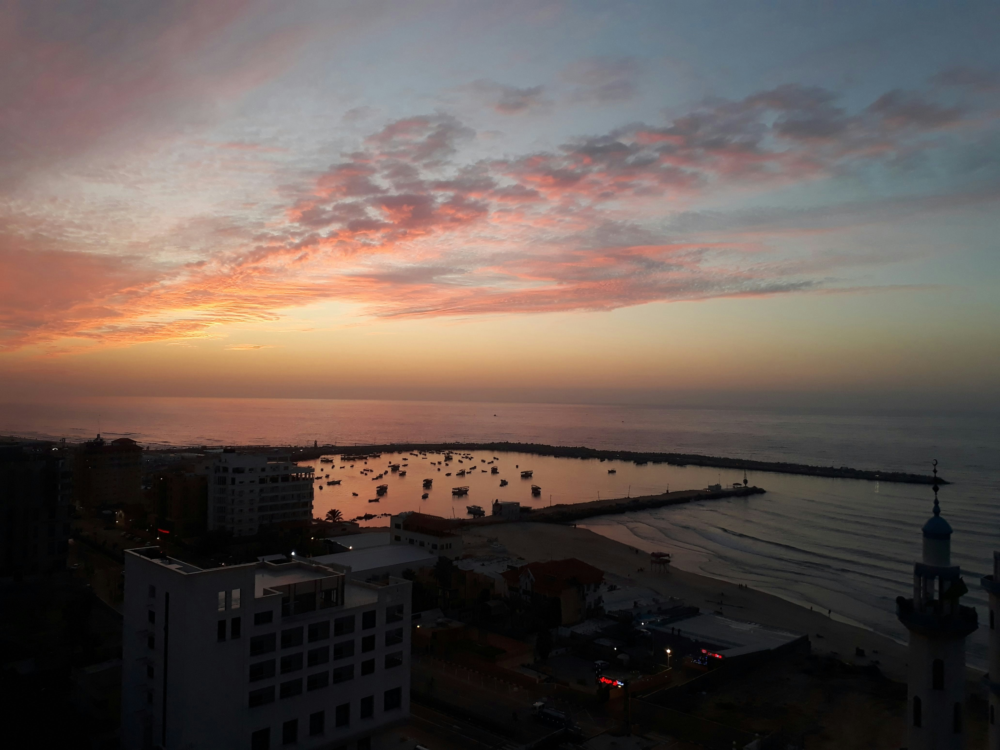

Top three activities to do at gaza

Strolling Historic Souqs
Shopping doubled as a social outing. In Gaza's Old City, people visited Souq Al-Zawiya for spices, produce, and textiles.

Gaza Seaport
The fishing harbor was a major social hub. People gathered there at sunset to drink tea, watch fishing boats return.

Play Football
Football was deeply popular, with local clubs like Shabab Rafah and Ittihad Shuja'iyya drawing passionate crowds to Yarmouk Stadium.